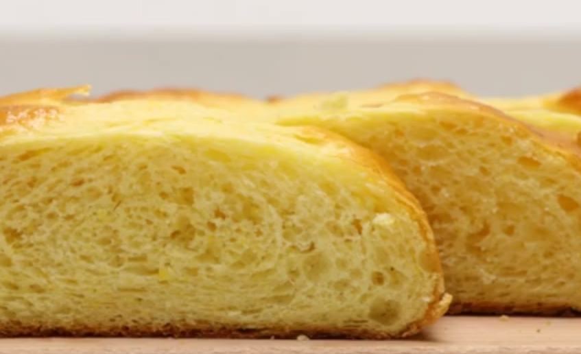
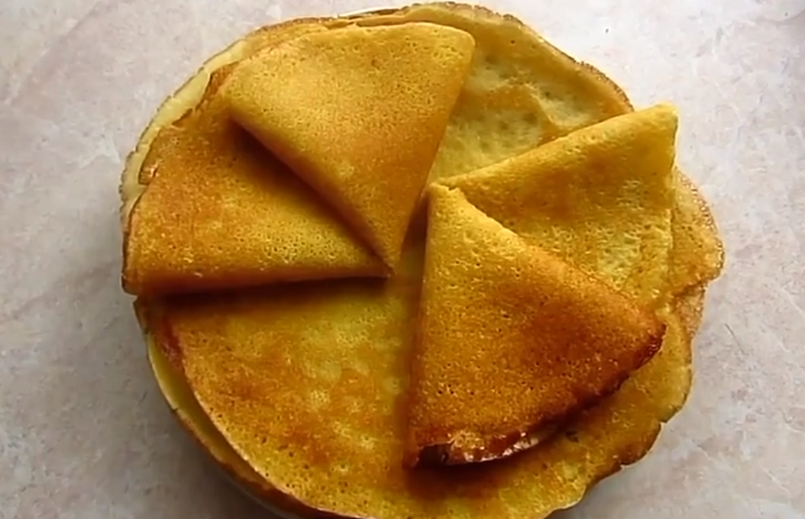
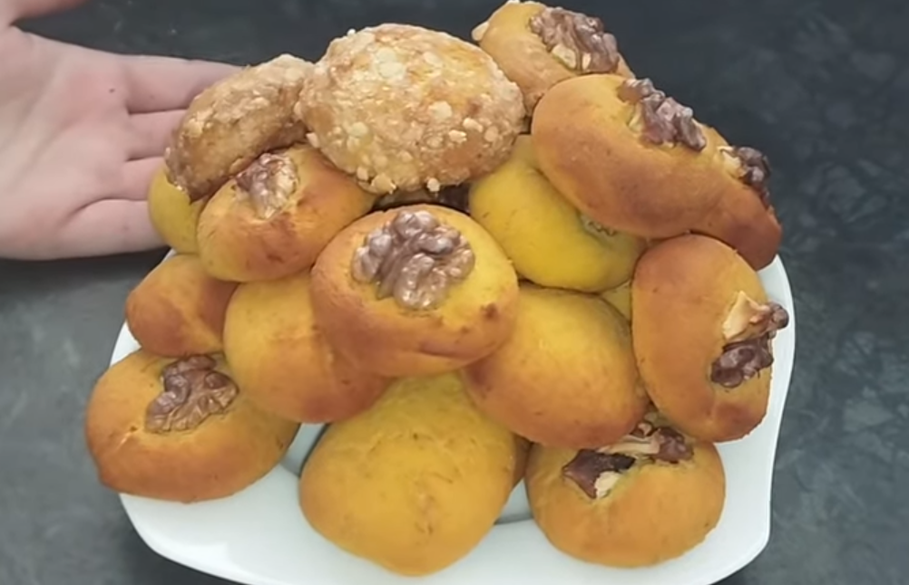
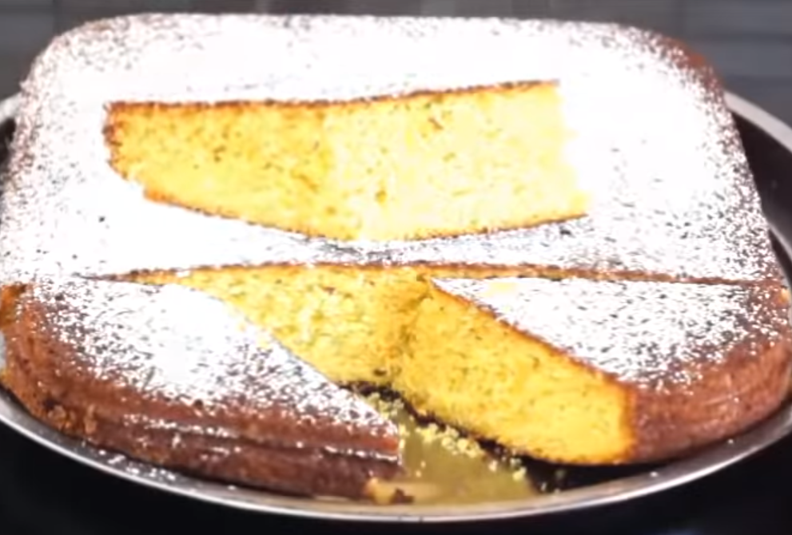
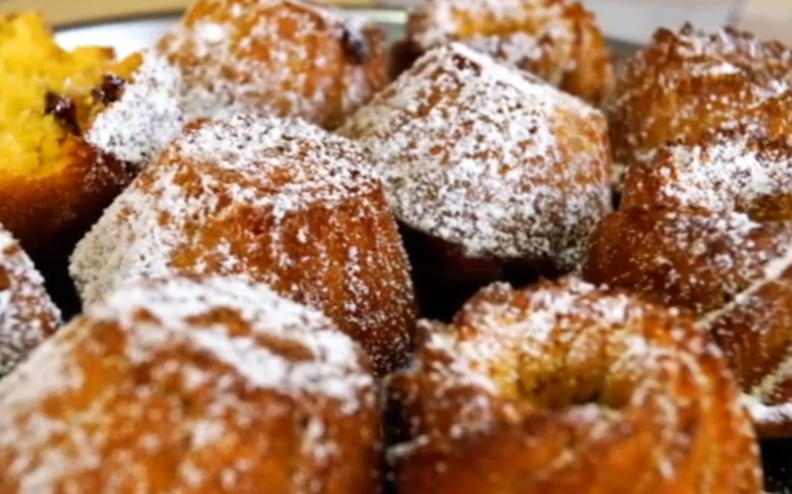
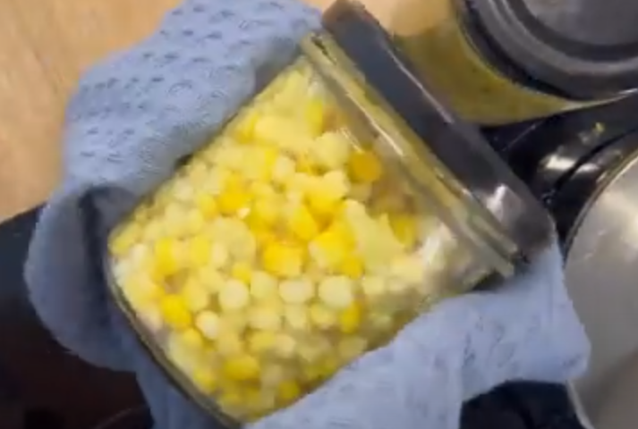

Рецепти з кукурудзи
Повернутися назад

Кукурудзяний хліб

Кукурудзяні млинці
Кукурудзяна каша з бринзою та шкварками

Кукурудзяне печиво

Закарпатський кукурудзяний пиріг

Мафіни кукурудзяні на сметані
Кукурудза запечена в маслі з твердим сиром

Консервована кукурудза